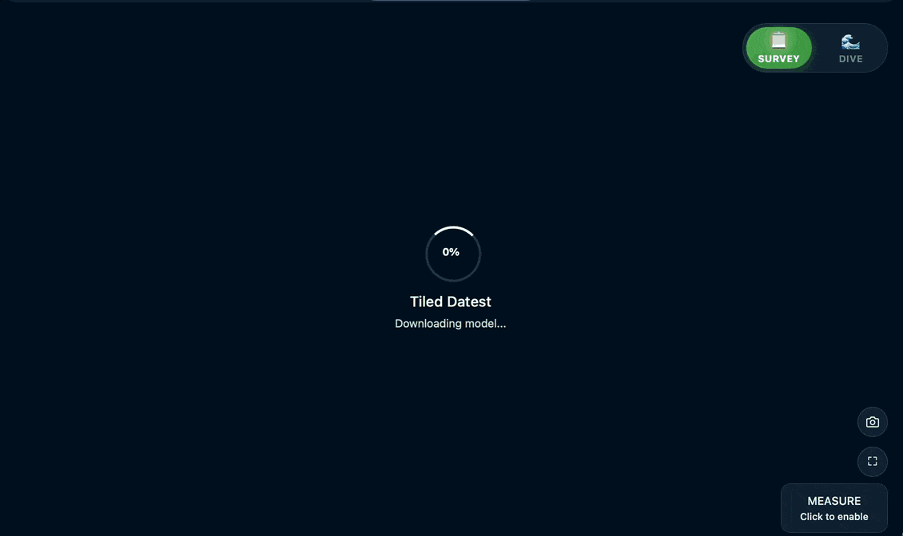

Patrick Morrison, updated July 18, 2026
BelowJS supports both single-file GLB models and streamed 3D Tiles datasets. Use a standard model entry (default type: 'gltf') for single-file delivery, or set type: 'tileset' when you need hierarchical streaming from a root tileset.json. For Quest-targeted GLBs, a practical upper limit is around 1.2 million polygons; if you cannot stay near that after optimisation, use tilesets.
At this scale, a single full-resolution model would be very slow to load over the internet, and trying to render all detail at once on a standalone Quest headset can freeze the device. With tilesets, BelowJS streams only the detail needed for the current view. During VR sessions, BelowJS prioritises rendering, then throttles and schedules tile queue work with small per-frame budgets to reduce locomotion hitches while streaming.
The complete dataset can be much larger than device memory because only a working set is downloaded, decoded, cached, and drawn. Practical scale still depends on a sound tile hierarchy, useful levels of detail, texture sizes, host throughput, and how quickly the viewer moves into uncached areas.

Denton Holme and Macedon 2023 example: 455.25 MB total converted dataset size, 6,336,051 vertices at finest-detail leaf tiles, and texture area equivalent to about 77 x 4K textures. Tile detail streams in progressively as you move.
Metashape exports tiled datasets as .3tz, which is an archive. If you are using Metashape, this corresponds to its Cesium 3D Tiles v1.1 (*.3tz) export option. BelowJS does not load the archive directly; it loads the root tileset.json inside a converted folder. The workflow is: export *.3tz, run the convert-3tz.sh conversion script, then load the resulting tileset.json URL in the tiled model example.
The script is a wrapper around 3d-tiles-tools: it runs convert, then upgrade --targetVersion (1.0 or 1.1, default 1.1), verifies tileset.json exists after each step, and removes the extra App/ wrapper folder. If you prefer your own pipeline, run equivalent steps and load the resulting tileset.json.
http://localhost:5173/examples/tileset/index.html?url=http://localhost:5173/examples/tileset/wreck-tiles/tileset.json&up=+ZLive example: BelowJS 3D Tiles streaming demo.
up supports +Y, -Y, +Z, -Z, +X, and -X (default +Y). Geospatial reorientation defaults to 'auto'; set geospatialReorientation: 'force' to always level a tileset, or false to disable it.
{
type: 'tileset',
url: '.../tileset.json',
up: '+Z',
geospatialReorientation: 'auto',
autoCenter: true,
maxTriangles: 1000000,
loadAncestors: true
}url must point to the root tileset.json. BelowJS follows the current 3d-tiles-renderer defaults unless you override them: errorTarget: 16, unlimited maxDepth, loadSiblings: true, loadAncestors: true, and maxTilesProcessed: 250. Keeping ancestors loaded preserves a coarse fallback until detailed children are ready, which avoids visible holes while moving. Set loadAncestors: false only after measuring the memory and visual-continuity tradeoff on your own tileset.
At runtime, BelowJS updates traversal cameras and resolution, then adjusts quality adaptively by changing errorTarget and maxTilesProcessed based on camera motion and rendered triangle counts. Automatic VR profiles use two KTX2 texture-transcoding workers on standalone headsets to limit decode bursts and four on PCVR to use the extra CPU capacity; ktxWorkerLimit can override this per model.
file://, and confirm the URL points to tileset.json.up correctly; try +Z, -Z, +Y, -Y, +X, -X.geospatialReorientation: 'force' or set it to false if auto-leveling is not wanted.maxTriangles and/or raise errorTarget; these directly reduce rendered detail.enableGltfExtensions: true (default). If self-hosting transcoders, set dracoDecoderPath and ktx2TranscoderPath explicitly.Note: 3D Tiles support was released in 1.7 and is currently experimental. It is planned to stabilise in BelowJS v2.
convert-3tz.sh to convert and upgrade Metashape exportsAfter loading works, deploy the tileset folder as static files.